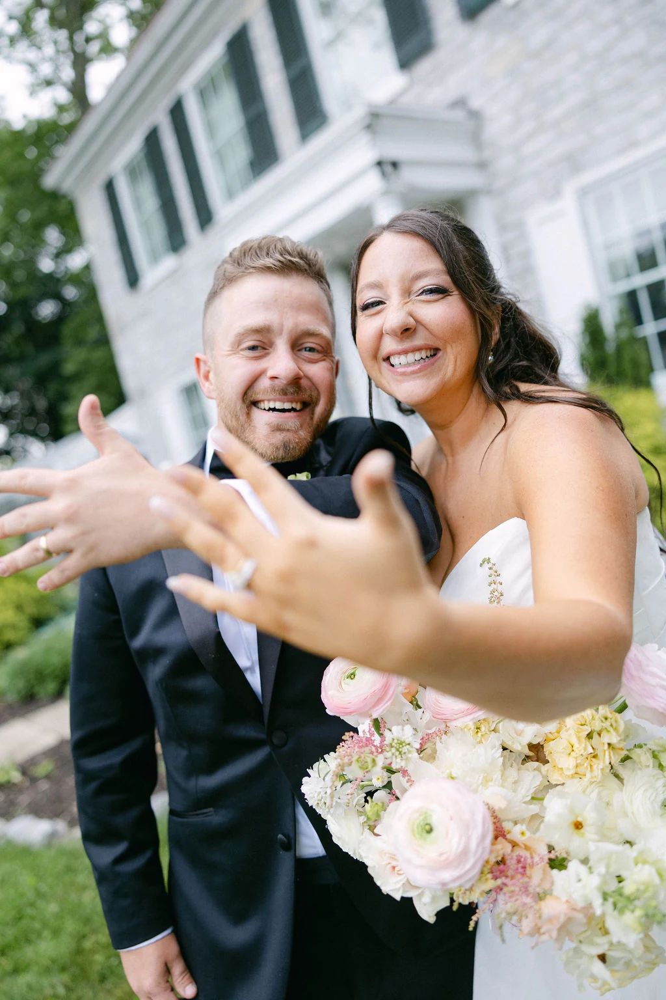
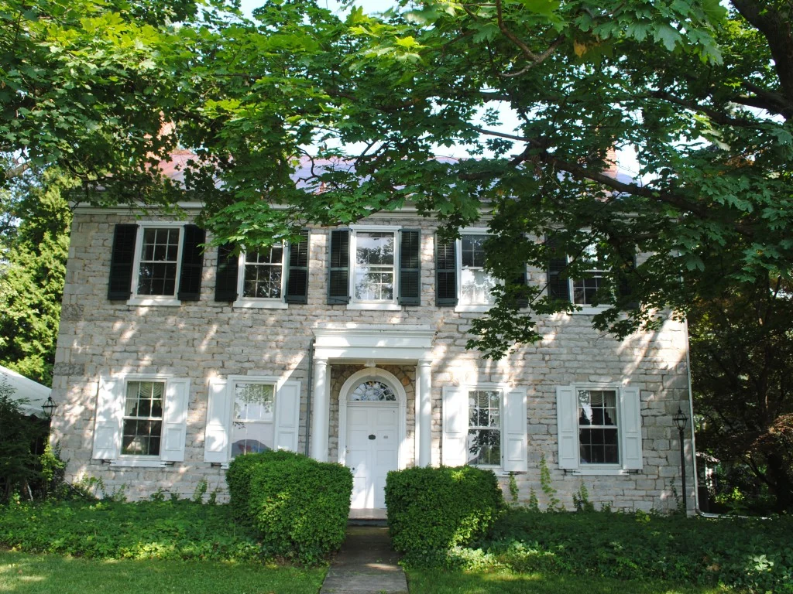
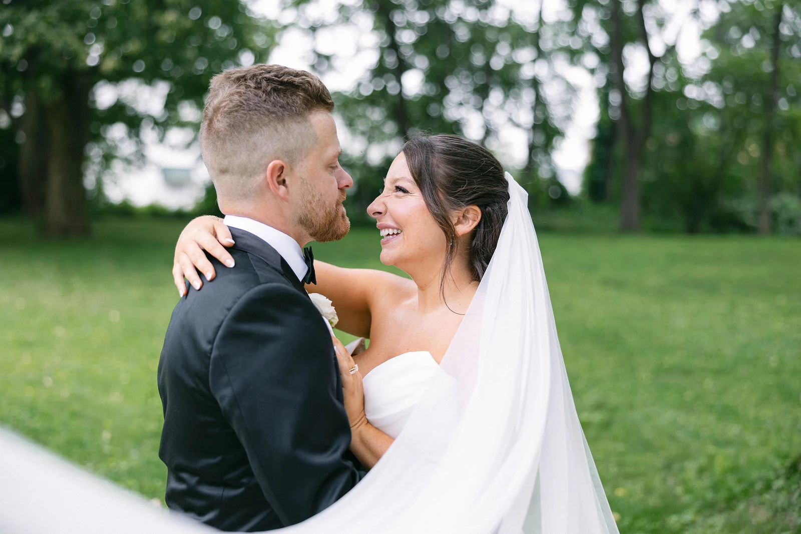
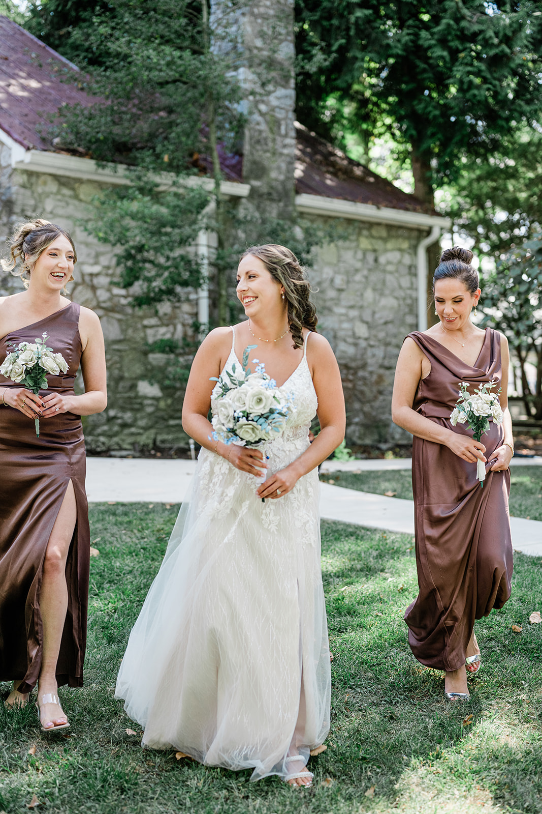
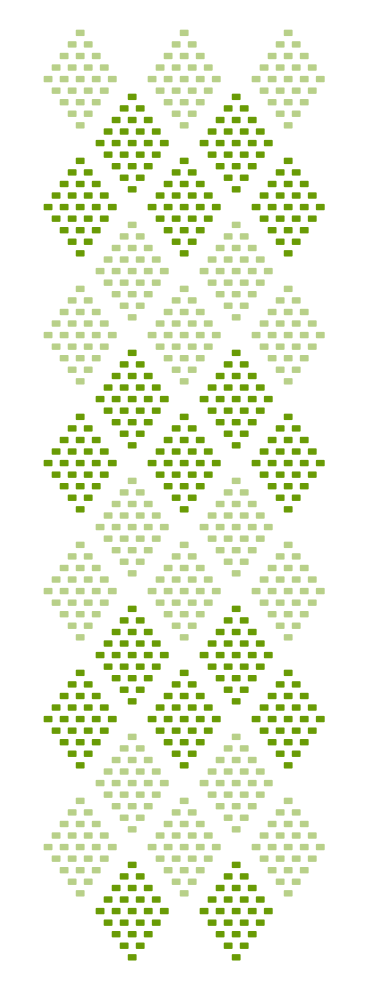

Two Mile House · Historic house & grounds
A garden wedding.
A historic house.
Gather the people you love in a setting with stone walls, green grounds and a history of its own.
Historic house · Garden setting · Venue-only rental

Justace Faith Photo
CCHSThe house & grounds
The house and grounds, together.
Rent the entire Two Mile House property for your celebration. The historic house and grounds host weddings, showers, birthday parties and holiday gatherings.
Explore the house & groundsTwo Mile House is a venue-only rental. You arrange catering and other event services separately.
Review the rental detailsWeddings at Two Mile House
The place is part of it.
The people make it yours.
A look at real weddings at Two Mile House: the people, the setting and the moments they shared.

Justace Faith Photo
Molly Kate PhotographyBefore you make plans
Get a clear picture
of the rental.
See what comes with the property rental and which services you arrange separately. Contact us for current pricing and to discuss your plans.
Read the rental details
A place to begin
Start with the date you have in mind.
Tell us your preferred date and approximate guest count. Ask about availability and the details of a venue rental.
Ask about your date